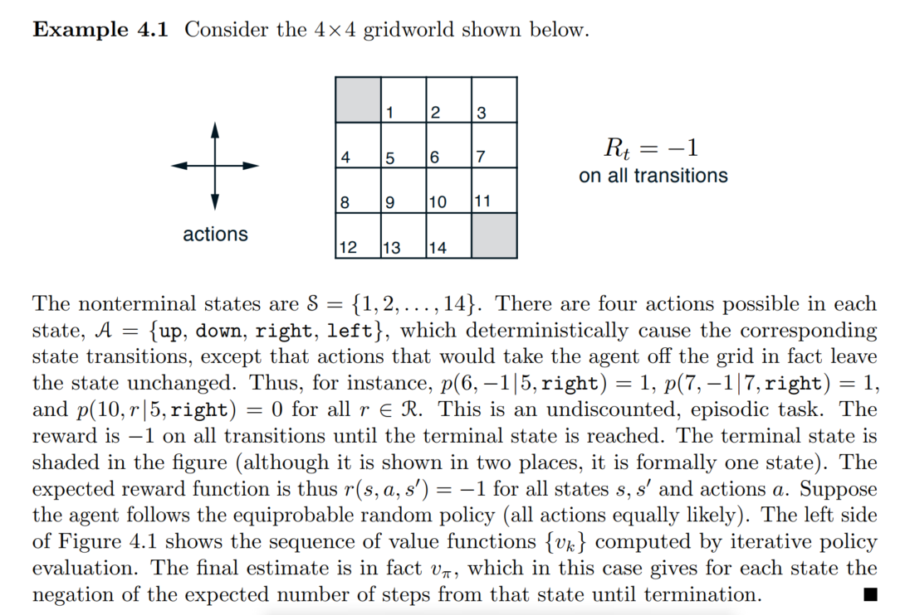
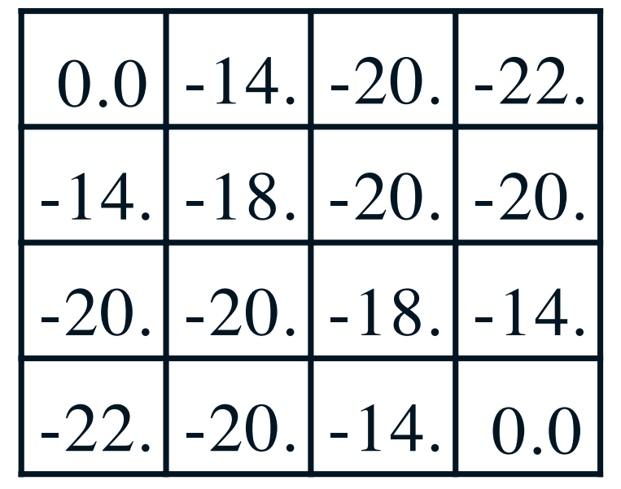
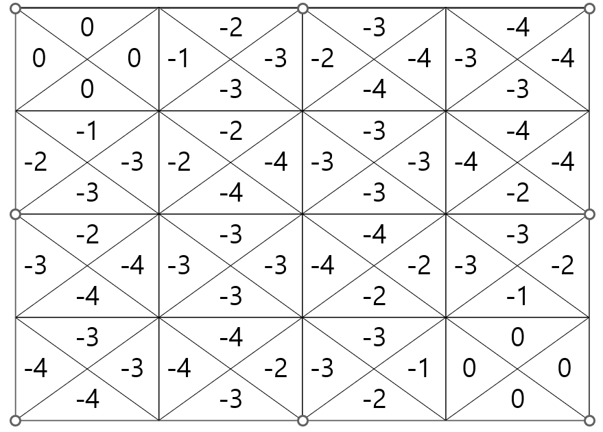

Greed World Problem

- \(\mathcal{S} = \{[0,0],[0,1],...,[3,3]\}\)
- \(\mathcal{A}(s) = \{\text{up,down,right,left}\}\)
- \(R_t = -1\)
- \(\gamma = 1\)
- Deterministically cause the corresponding state transitions
- The actions that would take the agent off the grid in fact leave the state unchanged.
- undiscounted, episodic task
True Value function \(v_\pi\)
- \(\forall s,\forall a : \pi(a|s) = 0.25\)

Optimal action value function, \(q_{\star}\)

q_star = {((0, 0), 'W'): 0,
((0, 0), 'E'): 0,
((0, 0), 'N'): 0,
((0, 0), 'S'): 0,
((0, 1), 'W'): -1.0,
((0, 1), 'E'): -3.0,
((0, 1), 'N'): -2.0,
((0, 1), 'S'): -3.0,
((0, 2), 'W'): -2.0,
((0, 2), 'E'): -4.0,
((0, 2), 'N'): -3.0,
((0, 2), 'S'): -4.0,
((0, 3), 'W'): -3.0,
((0, 3), 'E'): -4.0,
((0, 3), 'N'): -4.0,
((0, 3), 'S'): -3.0,
((1, 0), 'W'): -2.0,
((1, 0), 'E'): -3.0,
((1, 0), 'N'): -1.0,
((1, 0), 'S'): -3.0,
((1, 1), 'W'): -2.0,
((1, 1), 'E'): -4.0,
((1, 1), 'N'): -2.0,
((1, 1), 'S'): -4.0,
((1, 2), 'W'): -3.0,
((1, 2), 'E'): -3.0,
((1, 2), 'N'): -3.0,
((1, 2), 'S'): -3.0,
((1, 3), 'W'): -4.0,
((1, 3), 'E'): -3.0,
((1, 3), 'N'): -4.0,
((1, 3), 'S'): -2.0,
((2, 0), 'W'): -3.0,
((2, 0), 'E'): -4.0,
((2, 0), 'N'): -2.0,
((2, 0), 'S'): -4.0,
((2, 1), 'W'): -3.0,
((2, 1), 'E'): -3.0,
((2, 1), 'N'): -3.0,
((2, 1), 'S'): -3.0,
((2, 2), 'W'): -4.0,
((2, 2), 'E'): -2.0,
((2, 2), 'N'): -4.0,
((2, 2), 'S'): -2.0,
((2, 3), 'W'): -3.0,
((2, 3), 'E'): -2.0,
((2, 3), 'N'): -3.0,
((2, 3), 'S'): -1.0,
((3, 0), 'W'): -4.0,
((3, 0), 'E'): -3.0,
((3, 0), 'N'): -3.0,
((3, 0), 'S'): -4.0,
((3, 1), 'W'): -4.0,
((3, 1), 'E'): -2.0,
((3, 1), 'N'): -4.0,
((3, 1), 'S'): -3.0,
((3, 2), 'W'): -3.0,
((3, 2), 'E'): -1.0,
((3, 2), 'N'): -3.0,
((3, 2), 'S'): -2.0,
((3, 3), 'W'): 0,
((3, 3), 'E'): 0,
((3, 3), 'N'): 0,
((3, 3), 'S'): 0}Set up
class Environment():
def __init__(self,grid_size):
self.grid_size = np.array(grid_size)
self.S = [np.array([i,j]) for i in range(grid_size[0]) for j in range(grid_size[1])]
self.Terminal_states = [(0,0),(self.grid_size[0]-1,self.grid_size[1]-1)]
self.A = ["W","E","N","S"]
self.A_to_coord = {"W" : [0,-1],"E" : [0,1], "N" : [-1,0], "S" : [1,0]}
for k,v in self.A_to_coord.items():
self.A_to_coord[k] = np.array(v)
self.gamma = 1
self.R = -1
def move(self,s,a):
"""
Input
s : current_state(position)
a : action(from deterministic policy π)
output
s_next : state after one_step transition
ex)
Input : s = [0,1],a = "W"
Output : s_next = [0,0]
"""
s_next = s + self.A_to_coord[a]
if s_next[0] < 0 or s_next[1] <0 or s_next[0] >= self.grid_size[0] or s_next[1] >= self.grid_size[1]:
return s # |S|를 넘어갈 경우, 원래 상태를 반환
else:
return s_next
def move_test(self):
S = [np.array([i,j]) for i in [0,1,2,3] for j in [0,1,2,3]]
for s in S:
for a in self.A:
print(s,a,self.move(s,a))
def dynamics(self,s_prime,r,s,a):
r=-1
"""
Input
s : current_state(position)
a : action(from deterministic policy π)
s_prime : all of the possible states after one-step transition
r : immediate reward(-1)
output
0 if s에서 a로 움직였을때의 변화된 상태 next_s와 s_prime의 input이 다를때
1 if s에서 a로 움직였을때의 변화된 상태 next_s와 s_prime의 input이 같을때
즉, a방향으로 움직이면 반드시 a방향으로 감(deterministic)
"""
s_next = self.move(s,a)
if np.sum(s_next != s_prime)>=1:
return 0
else:
return 1
def dynamics_test(self,check_p = 1):
r=-1
for s in self.S:
for a in self.A:
for s_prime in self.S: #가능한 모든 next_state
if self.dynamics(s_prime,r,s,a) == check_p:
print(f"state : {s} action : {a} s_prime : {s_prime} dynamics : {self.dynamics(s_prime,r,s,a)}")
def sampling_action(self,s_t,π):
"""
Input current state s_t : tuple
ouput action : str (a ~ π(a|s))
"""
actions = []
prob = []
for a,p in π[s_t].items():
actions.append(a)
prob.append(p)
#print(prob)
return np.random.choice(a=actions,p=prob)
def generate_π(self,uniform=False):
"""
Input : NA
Output : {(x,y) : {"W" : pr1,"E" : pr2 ,...}}
ex)
{(0,0):{"W" : 0.1, "E" : 0.2, ...},(0,1):{"W":0.4,"E":0.5...}}
"""
π = {(i,j): {} for i in range(self.grid_size[0]) for j in range(self.grid_size[1])}
for t in π.values():
unnormalized_prob = np.random.rand(4)
if uniform == False:
prob = unnormalized_prob/np.sum(unnormalized_prob)
else:
prob = [0.25] * 4
for i in range(len(self.A)):
t[self.A[i]] = prob[i]
return π
def argmax_a_Q(self,Q,s):
max_action = "W"
max_value = -5000
for visit,Q_val in Q.items():
if visit[0] == s:
if Q_val > max_value:
max_action = visit[1]
max_value = Q_val
return max_action
class Q_learning(Environment):
def __init__(self,grid_size=(4,4)):
super().__init__(grid_size)
def control(self,s_0,iter_num,alpha,epsilon):
Q = {(tuple(s),a) : 0 for s in self.S for a in self.A}
π = self.generate_π()
γ = 1
for ep_num in range(iter_num):
ϵ = epsilon ** (ep_num + 1)
α = alpha ** (ep_num + 1)
if ep_num % 1000 == True:
print(f"epsilon : {ϵ} alpha : {α}")
s_t = s_0
while s_t not in self.Terminal_states:
a_t = self.sampling_action(s_t,π)
r,s_prime = -1,tuple(self.move(s_t,a_t))
Q[(s_t,a_t)] = Q[(s_t,a_t)] + α * (r + γ * Q[(s_prime,self.argmax_a_Q(Q,s_prime))] - Q[(s_t,a_t)])
a_star = self.argmax_a_Q(Q,tuple(s_t))
for (state,action),value in Q.items():
if action == a_star:
π[state][action] = 1 - ϵ + ϵ /len(self.A)
else:
π[state][action] = ϵ/len(self.A)
s_t = s_prime
return π,QTD_Prediction
strategy1
\[\begin{aligned} \alpha(s) = \frac{1}{N(s)} \end{aligned}\]class TD(Environment):
def __init__(self,grid_size=(4,4)):
super().__init__(grid_size)
def prediction(self,s_0,π,iter_nums = 50):
t = time.time()
V = {tuple(s) : 0 for s in self.S}
N = {tuple(s) : 0 for s in self.S}
for ep_num in range(iter_nums):
N[s_0] += 1
s_t = s_0
while s_t not in self.Terminal_states:
a_t = self.sampling_action(s_t,π)
r,s_prime = -1,tuple(self.move(s_t,a_t))
N[s_prime] += 1
V[s_t] = V[s_t] + (1/N[s_t]) * (r + 1*V[s_prime] - V[s_t])
s_t = s_prime
print(f"lead time : {time.time()-t}")
return N,V
td = TD()
π = td.generate_π(True)
N,V = td.prediction(s_0 = (2,1),π = π,iter_nums = 10000)
N,Vlead time : 3.84700870513916({(0, 0): 4991,
(0, 1): 8714,
(0, 2): 11013,
(0, 3): 10582,
(1, 0): 11445,
(1, 1): 15471,
(1, 2): 12949,
(1, 3): 10557,
(2, 0): 19396,
(2, 1): 27376,
(2, 2): 14850,
(2, 3): 8354,
(3, 0): 19121,
(3, 1): 19306,
(3, 2): 11468,
(3, 3): 5009},
{(0, 0): 0,
(0, 1): -6.210219153348596,
(0, 2): -8.383241068493124,
(0, 3): -9.002126728634252,
(1, 0): -6.1390042000236225,
(1, 1): -7.7515192854294215,
(1, 2): -8.454972138492304,
(1, 3): -8.392769233108076,
(2, 0): -8.330045542123194,
(2, 1): -8.421539073360337,
(2, 2): -7.734287084877186,
(2, 3): -6.146458879225036,
(3, 0): -8.911924754087085,
(3, 1): -8.321791681471996,
(3, 2): -6.097562056472681,
(3, 3): 0})- It doesn’t converge to a true value.
- I thought the number of iterations was too small, so I did some more.
class TD(Environment):
def __init__(self,grid_size=(4,4)):
super().__init__(grid_size)
def prediction(self,s_0,π,iter_nums = 50):
t = time.time()
V = {tuple(s) : 0 for s in self.S}
N = {tuple(s) : 0 for s in self.S}
for ep_num in range(iter_nums):
N[s_0] += 1
s_t = s_0
while s_t not in self.Terminal_states:
a_t = self.sampling_action(s_t,π)
r,s_prime = -1,tuple(self.move(s_t,a_t))
N[s_prime] += 1
V[s_t] = V[s_t] + (1/N[s_t]) * (r + 1*V[s_prime] - V[s_t])
s_t = s_prime
print(f"lead time : {time.time()-t}")
return N,V
td = TD()
π = td.generate_π(True)
N,V = td.prediction(s_0 = (2,1),π = π,iter_nums = 1000000)
N,Vlead time : 376.06808495521545({(0, 0): 500675,
(0, 1): 857102,
(0, 2): 1071635,
(0, 3): 1068941,
(1, 0): 1141288,
(1, 1): 1497208,
(1, 2): 1284379,
(1, 3): 1069050,
(2, 0): 1930091,
(2, 1): 2714779,
(2, 2): 1498691,
(2, 3): 854888,
(3, 0): 1928620,
(3, 1): 1929364,
(3, 2): 1141312,
(3, 3): 499325},
{(0, 0): 0,
(0, 1): -7.710187158147642,
(0, 2): -10.649747597920722,
(0, 3): -11.512033496895874,
(1, 0): -7.772392586046007,
(1, 1): -9.839184282402476,
(1, 2): -10.751129025128156,
(1, 3): -10.654188503693032,
(2, 0): -10.819929137588238,
(2, 1): -10.85383247342236,
(2, 2): -9.84822261146621,
(2, 3): -7.712727075121741,
(3, 0): -11.760013045162655,
(3, 1): -10.832300462530744,
(3, 2): -7.79454500536325,
(3, 3): 0})- Increasing the iteration actually increased the difference with the true value function.
- It seems wrong to modify \(\alpha\) based on the number of returns like MC does.
strategy2
\[\begin{aligned} \alpha = k \end{aligned}\]class TD(Environment):
def __init__(self,grid_size=(4,4)):
super().__init__(grid_size)
def prediction(self,s_0,π,iter_nums,α=0.1):
V = {tuple(s) : 0 for s in self.S}
for ep_num in range(iter_nums):
s_t = s_0
while s_t not in self.Terminal_states:
a_t = self.sampling_action(s_t,π)
r,s_prime = -1,tuple(self.move(s_t,a_t))
V[s_t] = V[s_t] + α * (r + 1*V[s_prime] - V[s_t])
s_t = s_prime
return V{(0, 0): 0,
(0, 1): -3.0256925965875716,
(0, 2): -5.332214113492295,
(0, 3): -15.617543977702914,
(1, 0): -3.0629017222896167,
(1, 1): -23.2984430617318,
(1, 2): -18.28574411528579,
(1, 3): -19.756820878783724,
(2, 0): -22.470596366545834,
(2, 1): -18.796632804070903,
(2, 2): -19.36917079379382,
(2, 3): -16.783646559420106,
(3, 0): -8.414317785731221,
(3, 1): -8.23094812772801,
(3, 2): -1.7208495942458732,
(3, 3): 0}- It was still far from the true value, so I decided to reduce the alpha.
{(0, 0): 0,
(0, 1): -8.39849373243713,
(0, 2): -21.498903370973046,
(0, 3): -23.920539288117975,
(1, 0): -18.9460598907016,
(1, 1): -17.750880979198747,
(1, 2): -20.324083266925584,
(1, 3): -18.930470481543285,
(2, 0): -21.57693034519246,
(2, 1): -22.12603238307893,
(2, 2): -20.463756775083247,
(2, 3): -11.004329018730525,
(3, 0): -23.981268316159696,
(3, 1): -21.34414457966366,
(3, 2): -10.81270597397484,
(3, 3): 0}- It seemed to get a little closer to the true value at alpha=0.25.
- So I wonder if it would converge if I increased the number of iterations here.
td = TD()
π = td.generate_π(True)
V = td.prediction(s_0 = (2,1),π = π,iter_nums = 100000,α = 0.25)
V{(0, 0): 0,
(0, 1): -10.892909639267481,
(0, 2): -16.389984823596123,
(0, 3): -20.578998512300483,
(1, 0): -10.115580086229546,
(1, 1): -16.7374227182455,
(1, 2): -19.376736534483427,
(1, 3): -17.403295865603702,
(2, 0): -17.706264918772543,
(2, 1): -18.118900013790565,
(2, 2): -19.26210200598588,
(2, 3): -6.951457310762545,
(3, 0): -20.307685831910902,
(3, 1): -21.122118838034453,
(3, 2): -15.332188651767787,
(3, 3): 0}- It seemed to get a little more closer to the true value by increasing the number of iterations.
- The intuition here is that by decreasing alpha more and more and increasing iterations, I can get closer to the true value.
td = TD()
π = td.generate_π(True)
V = td.prediction(s_0 = (2,1),π = π,iter_nums = 100000,α = 0.025)
V{(0, 0): 0,
(0, 1): -13.468481120602783,
(0, 2): -18.04521926868933,
(0, 3): -20.830446568464893,
(1, 0): -14.162405826062944,
(1, 1): -17.51880803992086,
(1, 2): -18.99287999167345,
(1, 3): -19.31588268251589,
(2, 0): -19.68613223150354,
(2, 1): -19.616839196046627,
(2, 2): -17.409760812877337,
(2, 3): -12.103952443141019,
(3, 0): -21.66401720239512,
(3, 1): -19.851963302190605,
(3, 2): -14.369576703234577,
(3, 3): 0}td = TD()
π = td.generate_π(True)
V = td.prediction(s_0 = (2,1),π = π,iter_nums = 100000,α = 0.001)
V{(0, 0): 0,
(0, 1): -14.03275753892002,
(0, 2): -20.120670066469458,
(0, 3): -22.087632181402803,
(1, 0): -14.356100397943504,
(1, 1): -18.06656086981896,
(1, 2): -20.057873409291272,
(1, 3): -19.933245308012694,
(2, 0): -20.11923861351503,
(2, 1): -20.10721474631147,
(2, 2): -18.017930371514616,
(2, 3): -13.836185455422145,
(3, 0): -22.0836078738287,
(3, 1): -20.00180431090046,
(3, 2): -14.000978315795132,
(3, 3): 0}- It approximates the true value fairly well.
- I wonder if increasing the number of iterations would increase the value? Is this really convergence?
td = TD()
π = td.generate_π(True)
V = td.prediction(s_0 = (2,1),π = π,iter_nums = 500000,α = 0.001)
V{(0, 0): 0,
(0, 1): -14.023947065291312,
(0, 2): -19.88466015535378,
(0, 3): -22.019204023526456,
(1, 0): -13.997593366671204,
(1, 1): -17.867270764828138,
(1, 2): -19.89726566201253,
(1, 3): -19.982618186721407,
(2, 0): -19.907105325573927,
(2, 1): -19.89049628015864,
(2, 2): -17.926426396792216,
(2, 3): -13.883623908772902,
(3, 0): -21.86589991111874,
(3, 1): -19.918957752488122,
(3, 2): -14.041869061880227,
(3, 3): 0}- It seems to have converged.
- Insight
- It was stated that decreasing \(\alpha\) will always converge to True. However, decreasing \(\frac{1}{N}\) did not converge to the true value. Perhaps we need to increase the decrease further.
- The book said that if \(\alpha\) is a constant, it will converge to True on average. In my experiments, as long as \(\alpha\) is appropriate, 100% of them converged to the true value.
- In TD, the step size alpha should be set small by default. I think it should be at most 0.01 and definitely less than that.
SARSA(On-Policy TD Control)
\[\begin{aligned} \pi(a|s) = \begin{cases} 1-\epsilon + \frac{\epsilon}{|A(s)|}\quad(A = \text{greedy action})\\ \epsilon /|A(s)| \quad\quad\quad\quad (\text{otherwise}) \end{cases} \end{aligned}\]import numpy as np
import time
class Environment():
def __init__(self,grid_size):
self.grid_size = np.array(grid_size)
self.S = [np.array([i,j]) for i in range(grid_size[0]) for j in range(grid_size[1])]
self.Terminal_states = [(0,0),(self.grid_size[0]-1,self.grid_size[1]-1)]
self.A = ["W","E","N","S"]
self.A_to_coord = {"W" : [0,-1],"E" : [0,1], "N" : [-1,0], "S" : [1,0]}
for k,v in self.A_to_coord.items():
self.A_to_coord[k] = np.array(v)
self.gamma = 1
self.R = -1
def move(self,s,a):
"""
Input
s : current_state(position)
a : action(from deterministic policy π)
output
s_next : state after one_step transition
ex)
Input : s = [0,1],a = "W"
Output : s_next = [0,0]
"""
s_next = s + self.A_to_coord[a]
if s_next[0] < 0 or s_next[1] <0 or s_next[0] >= self.grid_size[0] or s_next[1] >= self.grid_size[1]:
return s # |S|를 넘어갈 경우, 원래 상태를 반환
else:
return s_next
def move_test(self):
S = [np.array([i,j]) for i in [0,1,2,3] for j in [0,1,2,3]]
for s in S:
for a in self.A:
print(s,a,self.move(s,a))
def dynamics(self,s_prime,r,s,a):
r=-1
"""
Input
s : current_state(position)
a : action(from deterministic policy π)
s_prime : all of the possible states after one-step transition
r : immediate reward(-1)
output
0 if s에서 a로 움직였을때의 변화된 상태 next_s와 s_prime의 input이 다를때
1 if s에서 a로 움직였을때의 변화된 상태 next_s와 s_prime의 input이 같을때
즉, a방향으로 움직이면 반드시 a방향으로 감(deterministic)
"""
s_next = self.move(s,a)
if np.sum(s_next != s_prime)>=1:
return 0
else:
return 1
def dynamics_test(self,check_p = 1):
r=-1
for s in self.S:
for a in self.A:
for s_prime in self.S: #가능한 모든 next_state
if self.dynamics(s_prime,r,s,a) == check_p:
print(f"state : {s} action : {a} s_prime : {s_prime} dynamics : {self.dynamics(s_prime,r,s,a)}")
def sampling_action(self,s_t,π):
"""
Input current state s_t : tuple
ouput action : str (a ~ π(a|s))
"""
actions = []
prob = []
for a,p in π[s_t].items():
actions.append(a)
prob.append(p)
#print(prob)
return np.random.choice(a=actions,p=prob)
def generate_π(self,uniform=False):
"""
Input : NA
Output : {(x,y) : {"W" : pr1,"E" : pr2 ,...}}
ex)
{(0,0):{"W" : 0.1, "E" : 0.2, ...},(0,1):{"W":0.4,"E":0.5...}}
"""
π = {(i,j): {} for i in range(self.grid_size[0]) for j in range(self.grid_size[1])}
for t in π.values():
unnormalized_prob = np.random.rand(4)
if uniform == False:
prob = unnormalized_prob/np.sum(unnormalized_prob)
else:
prob = [0.25] * 4
for i in range(len(self.A)):
t[self.A[i]] = prob[i]
return π
def argmax_a_Q(self,Q,s):
max_action = "W"
max_value = -5000
for visit,Q_val in Q.items():
if visit[0] == s:
if Q_val > max_value:
max_action = visit[1]
max_value = Q_val
return max_actionclass SARSA(Environment):
def __init__(self,grid_size=(4,4)):
super().__init__(grid_size)
def control(self,s_0,iter_nums,α=0.9,ϵ = 0.9995):
Q = {(tuple(s),a):0 for s in self.S for a in self.A}
π = self.generate_π()
action_space_size = len(self.A)
count=0
for ep_num in range(1,iter_nums):
s_t = s_0;a = self.sampling_action(s_0,π)
a_t = self.sampling_action(s_t,π)
epsilon = ϵ #실수한 부분
alpha = α #GLIE?
if ep_num % 1000 == 0:
print(f"episode : {ep_num}, epsilon : {epsilon}, alpha : {alpha}")
while s_t not in self.Terminal_states:
count+=1
r,s_prime = -1,tuple(self.move(s_t,a_t))
#sampling action ~ ϵ-greedy action
#1. make ϵ-greedy policy
a_star = self.argmax_a_Q(Q,s_prime)
for action,prob in π[s_prime].items():
if action == a_star:
π[s_prime][action] = 1 - epsilon + epsilon/action_space_size
else:
π[s_prime][action] = epsilon/action_space_size
#2. sampling action
a_prime = self.sampling_action(s_prime,π)
Q[(s_t,a_t)] = Q[(s_t,a_t)] + alpha*(r + 1*Q[(s_prime,a_prime)] - Q[(s_t,a_t)])
#print(alpha*(r + 1*Q[(s_prime,a_prime)] - Q[(s_t,a_t)]))
s_t = s_prime;a_t = a_prime
count+=1
return Q,πsarsa = SARSA()
Q,π = sarsa.control(s_0 = (2,1),iter_nums = 10000,α = 0.9,ϵ = 0.9)
rmse = difference(q_star,Q)
np.sum(rmse)episode : 1000, epsilon : 0.9, alpha : 0.9
episode : 2000, epsilon : 0.9, alpha : 0.9
episode : 3000, epsilon : 0.9, alpha : 0.9
episode : 4000, epsilon : 0.9, alpha : 0.9
episode : 5000, epsilon : 0.9, alpha : 0.9
episode : 6000, epsilon : 0.9, alpha : 0.9
episode : 7000, epsilon : 0.9, alpha : 0.9
episode : 8000, epsilon : 0.9, alpha : 0.9
episode : 9000, epsilon : 0.9, alpha : 0.9483.8118478775802sarsa = SARSA()
Q,π = sarsa.control(s_0 = (2,1),iter_nums = 10000,α = 0.5,ϵ = 0.9)
rmse = difference(q_star,Q)
np.sum(rmse)episode : 1000, epsilon : 0.9, alpha : 0.5
episode : 2000, epsilon : 0.9, alpha : 0.5
episode : 3000, epsilon : 0.9, alpha : 0.5
episode : 4000, epsilon : 0.9, alpha : 0.5
episode : 5000, epsilon : 0.9, alpha : 0.5
episode : 6000, epsilon : 0.9, alpha : 0.5
episode : 7000, epsilon : 0.9, alpha : 0.5
episode : 8000, epsilon : 0.9, alpha : 0.5
episode : 9000, epsilon : 0.9, alpha : 0.5556.6158724643351sarsa = SARSA()
Q,π = sarsa.control(s_0 = (2,1),iter_nums = 10000,α = 0.9,ϵ = 0.5)
rmse = difference(q_star,Q)
np.sum(rmse)episode : 1000, epsilon : 0.5, alpha : 0.9
episode : 2000, epsilon : 0.5, alpha : 0.9
episode : 3000, epsilon : 0.5, alpha : 0.9
episode : 4000, epsilon : 0.5, alpha : 0.9
episode : 5000, epsilon : 0.5, alpha : 0.9
episode : 6000, epsilon : 0.5, alpha : 0.9
episode : 7000, epsilon : 0.5, alpha : 0.9
episode : 8000, epsilon : 0.5, alpha : 0.9
episode : 9000, epsilon : 0.5, alpha : 0.9200.9279392085909sarsa = SARSA()
Q,π = sarsa.control(s_0 = (2,1),iter_nums = 10000,α = 0.2,ϵ = 0.5)
rmse = difference(q_star,Q)
np.sum(rmse)episode : 1000, epsilon : 0.5, alpha : 0.2
episode : 2000, epsilon : 0.5, alpha : 0.2
episode : 3000, epsilon : 0.5, alpha : 0.2
episode : 4000, epsilon : 0.5, alpha : 0.2
episode : 5000, epsilon : 0.5, alpha : 0.2
episode : 6000, epsilon : 0.5, alpha : 0.2
episode : 7000, epsilon : 0.5, alpha : 0.2
episode : 8000, epsilon : 0.5, alpha : 0.2
episode : 9000, epsilon : 0.5, alpha : 0.2125.00452426936465sarsa = SARSA()
Q,π = sarsa.control(s_0 = (2,1),iter_nums = 10000,α = 0.5,ϵ = 0.2)
rmse = difference(q_star,Q)
np.sum(rmse)episode : 1000, epsilon : 0.2, alpha : 0.5
episode : 2000, epsilon : 0.2, alpha : 0.5
episode : 3000, epsilon : 0.2, alpha : 0.5
episode : 4000, epsilon : 0.2, alpha : 0.5
episode : 5000, epsilon : 0.2, alpha : 0.5
episode : 6000, epsilon : 0.2, alpha : 0.5
episode : 7000, epsilon : 0.2, alpha : 0.5
episode : 8000, epsilon : 0.2, alpha : 0.5
episode : 9000, epsilon : 0.2, alpha : 0.553.490927304402234sarsa = SARSA()
Q,π = sarsa.control(s_0 = (2,1),iter_nums = 10000,α = 0.01,ϵ = 0.2)
rmse = difference(q_star,Q)
np.sum(rmse)episode : 1000, epsilon : 0.2, alpha : 0.01
episode : 2000, epsilon : 0.2, alpha : 0.01
episode : 3000, epsilon : 0.2, alpha : 0.01
episode : 4000, epsilon : 0.2, alpha : 0.01
episode : 5000, epsilon : 0.2, alpha : 0.01
episode : 6000, epsilon : 0.2, alpha : 0.01
episode : 7000, epsilon : 0.2, alpha : 0.01
episode : 8000, epsilon : 0.2, alpha : 0.01
episode : 9000, epsilon : 0.2, alpha : 0.0136.054180468348434- Here I remembered that there are some conditions for the salsa algorithm to converge.
- GLIE, Robbins-Monro sequence of step-size \(\alpha_t\)
class SARSA(Environment):
def __init__(self,grid_size=(4,4)):
super().__init__(grid_size)
def control(self,s_0,iter_nums,α=0.9,ϵ = 0.9995):
Q = {(tuple(s),a):0 for s in self.S for a in self.A}
π = self.generate_π()
action_space_size = len(self.A)
count=0
for ep_num in range(1,iter_nums):
s_t = s_0;a = self.sampling_action(s_0,π)
a_t = self.sampling_action(s_t,π)
epsilon = ϵ ** (ep_num + 1) #실수한 부분
alpha = α**(ep_num+1) #GLIE?
if ep_num % (iter_nums / 10) == 0:
print(f"episode : {ep_num}, epsilon : {epsilon}, alpha : {alpha}")
while s_t not in self.Terminal_states:
count+=1
r,s_prime = -1,tuple(self.move(s_t,a_t))
#sampling action ~ ϵ-greedy action
#1. make ϵ-greedy policy
a_star = self.argmax_a_Q(Q,s_prime)
for action,prob in π[s_prime].items():
if action == a_star:
π[s_prime][action] = 1 - epsilon + epsilon/action_space_size
else:
π[s_prime][action] = epsilon/action_space_size
#2. sampling action
a_prime = self.sampling_action(s_prime,π)
Q[(s_t,a_t)] = Q[(s_t,a_t)] + alpha*(r + 1*Q[(s_prime,a_prime)] - Q[(s_t,a_t)])
#print(alpha*(r + 1*Q[(s_prime,a_prime)] - Q[(s_t,a_t)]))
s_t = s_prime;a_t = a_prime
count+=1
return Q,πsarsa = SARSA()
Q,π = sarsa.control(s_0 = (2,1),iter_nums = 10000,α = np.exp(np.log(0.0001)/10000),ϵ = 0.9999)
rmse = difference(q_star,Q)
np.sum(rmse)episode : 1000, epsilon : 0.9047424102692003, alpha : 0.3977406691050303
episode : 2000, epsilon : 0.818640693009023, alpha : 0.1583434123914593
episode : 3000, epsilon : 0.740733027040136, alpha : 0.06303764788294978
episode : 4000, epsilon : 0.6702396082111145, alpha : 0.025095739637028935
episode : 5000, epsilon : 0.6064548440752158, alpha : 0.009990793899844896
episode : 6000, epsilon : 0.5487402913771806, alpha : 0.003977406691050414
episode : 7000, epsilon : 0.49651826565897955, alpha : 0.0015834341239146371
episode : 8000, epsilon : 0.4492660590208904, alpha : 0.0006303764788295154
episode : 9000, epsilon : 0.40651070816152135, alpha : 0.00025095739637029634248.8158378933288- Once again, I see that the SARSA algorithm will not converge if the GLIE condition is not met.
sarsa = SARSA()
Q,π = sarsa.control(s_0 = (2,1),iter_nums = 10000,α = np.exp(np.log(0.0001)/100000),ϵ = 0.999)
rmse = difference(q_star,Q)
np.sum(rmse)episode : 1000, epsilon : 0.36732772934619273, alpha : 0.9119268439216149
episode : 2000, epsilon : 0.13506472547210194, alpha : 0.8316871663561808
episode : 3000, epsilon : 0.049662681604038125, alpha : 0.7585077106700777
episode : 4000, epsilon : 0.018260740807661924, alpha : 0.6917672538661829
episode : 5000, epsilon : 0.006714390847905722, alpha : 0.6308992338374627
episode : 6000, epsilon : 0.002468850794898966, alpha : 0.5753869398011344
episode : 7000, epsilon : 0.0009077851417265067, alpha : 0.5247591259224881
episode : 8000, epsilon : 0.0003337884432878974, alpha : 0.4785860108922666
episode : 9000, epsilon : 0.00012273248343838214, alpha : 0.43647562949787516138.7147404680331- Once again, I see that the SARSA algorithm will not converge if the Robbins-Monro condition is not met.
sarsa = SARSA()
Q,π = sarsa.control(s_0 = (2,1),iter_nums = 100000,α = np.exp(np.log(0.0001)/100000),ϵ = 0.9999)
rmse = difference(q_star,Q)
np.sum(rmse)episode : 10000, epsilon : 0.36782426032832716, alpha : 0.3980705052167768
episode : 20000, epsilon : 0.13530821730781176, alpha : 0.15847472251273403
episode : 30000, epsilon : 0.049774622409831396, alpha : 0.06308992338382775
episode : 40000, epsilon : 0.01831014468548656, alpha : 0.025116550888785564
episode : 50000, epsilon : 0.006735588984342178, alpha : 0.009999079008402512
episode : 60000, epsilon : 0.0024777608121225024, alpha : 0.003980705052178049
episode : 70000, epsilon : 0.0009114716851579903, alpha : 0.0015847472251314335
episode : 80000, epsilon : 0.00033529492789624127, alpha : 0.000630899233839907
episode : 90000, epsilon : 0.0001233419430395787, alpha : 0.000251165508888504423.817640205236938- Here, I see that the SARSA algorithm gradually converges to the GLIE and Robbins-monro conditions.
- I’ve also seen that by increasing the number of iterations here, I can approach the optimal action value function and policy
sarsa = SARSA()
Q,π = sarsa.control(s_0 = (2,1),iter_nums = 1000000,α = np.exp(np.log(0.0001)/1000000),ϵ = 0.99999)
rmse = difference(q_star,Q)
np.sum(rmse)episode : 100000, epsilon : 0.3678739229922288, alpha : 0.3981035038657425
episode : 200000, epsilon : 0.13533257654345773, alpha : 0.15848785951058994
episode : 300000, epsilon : 0.04978582369992489, alpha : 0.06309515331650908
episode : 400000, epsilon : 0.018315089424785096, alpha : 0.025118632962342347
episode : 500000, epsilon : 0.006737711173760915, alpha : 0.009999907896757296
episode : 600000, epsilon : 0.0024786530280102824, alpha : 0.00398103503855267
episode : 700000, epsilon : 0.0009118409315600251, alpha : 0.0015848785950641953
episode : 800000, epsilon : 0.0003354458550964258, alpha : 0.0006309515331484882
episode : 900000, epsilon : 0.00012340301669597187, alpha : 0.00025118632961681388.850716178450071- It seems to have converged.
- Insight
- The SARSA algorithm converges only when the GLIE and Robbins-monro conditions are satisfied.
- It is very slow to converge.
Q-learning
class Q_learning(Environment):
def __init__(self,grid_size=(4,4)):
super().__init__(grid_size)
def control(self,s_0,iter_num,alpha,epsilon):
Q = {(tuple(s),a) : 0 for s in self.S for a in self.A}
π = self.generate_π()
γ = 1
for ep_num in range(iter_num):
ϵ = epsilon ** (ep_num + 1)
α = alpha ** (ep_num + 1)
if ep_num % (iter_num / 10) == True:
print(f"epsilon : {ϵ} alpha : {α}")
s_t = s_0
while s_t not in self.Terminal_states:
a_t = self.sampling_action(s_t,π)
r,s_prime = -1,tuple(self.move(s_t,a_t))
Q[(s_t,a_t)] = Q[(s_t,a_t)] + α * (r + γ * Q[(s_prime,self.argmax_a_Q(Q,s_prime))] - Q[(s_t,a_t)])
a_star = self.argmax_a_Q(Q,tuple(s_t))
for (state,action),value in Q.items():
if action == a_star:
π[state][action] = 1 - ϵ + ϵ /len(self.A)
else:
π[state][action] = ϵ/len(self.A)
s_t = s_prime
return π,Q
q_l = Q_learning()
π,Q= q_l.control(s_0 = (2,1),iter_num = 1000,alpha = np.exp(np.log(0.001)/1000),epsilon = 0.995)
rmse = difference(q_star,Q)
np.sum(rmse)epsilon : 0.990025 alpha : 0.9862794856312106
epsilon : 0.599727876386733 alpha : 0.4943106869868377
epsilon : 0.36329741745444855 alpha : 0.24774220576333084
epsilon : 0.2200748351473355 alpha : 0.12416523075924281
epsilon : 0.13331482894782642 alpha : 0.062230028516917085
epsilon : 0.08075818212241154 alpha : 0.031188895840940083
epsilon : 0.04892091923449094 alpha : 0.015631476426409968
epsilon : 0.029634846598205228 alpha : 0.007834296427662368
epsilon : 0.017951913959130546 alpha : 0.003926449353996142
epsilon : 0.010874738754866503 alpha : 0.0019678862897069260.06320977473202194q_l = Q_learning()
π,Q= q_l.control(s_0 = (2,1),iter_num = 10000,alpha = np.exp(np.log(0.001)/10000),epsilon = 0.9995)
rmse = difference(q_star,Q)
np.sum(rmse)epsilon : 0.9990002500000001 alpha : 0.9986194028465246
epsilon : 0.6058485196309606 alpha : 0.5004952959591761
epsilon : 0.36741975664072807 alpha : 0.25084185282524624
epsilon : 0.22282348342150354 alpha : 0.1257187342954265
epsilon : 0.13513237616300078 alpha : 0.06300862465664786
epsilon : 0.0819516812458937 alpha : 0.031579118286324974
epsilon : 0.0496999923314264 alpha : 0.015827050934311866
epsilon : 0.030140800044509277 alpha : 0.007932315874245822
epsilon : 0.0182790335512516 alpha : 0.0039755754492710235
epsilon : 0.011085408054012442 alpha : 0.00199250766149667530.0{((0, 0), 'W'): 0,
((0, 0), 'E'): 0,
((0, 0), 'N'): 0,
((0, 0), 'S'): 0,
((0, 1), 'W'): -1.0,
((0, 1), 'E'): -3.0,
((0, 1), 'N'): -2.0,
((0, 1), 'S'): -3.0,
((0, 2), 'W'): -2.0,
((0, 2), 'E'): -4.0,
((0, 2), 'N'): -3.0,
((0, 2), 'S'): -4.0,
((0, 3), 'W'): -3.0,
((0, 3), 'E'): -4.0,
((0, 3), 'N'): -4.0,
((0, 3), 'S'): -3.0,
((1, 0), 'W'): -2.0,
((1, 0), 'E'): -3.0,
((1, 0), 'N'): -1.0,
((1, 0), 'S'): -3.0,
((1, 1), 'W'): -2.0,
((1, 1), 'E'): -4.0,
((1, 1), 'N'): -2.0,
((1, 1), 'S'): -4.0,
((1, 2), 'W'): -3.0,
((1, 2), 'E'): -3.0,
((1, 2), 'N'): -3.0,
((1, 2), 'S'): -3.0,
((1, 3), 'W'): -4.0,
((1, 3), 'E'): -3.0,
((1, 3), 'N'): -4.0,
((1, 3), 'S'): -2.0,
((2, 0), 'W'): -3.0,
((2, 0), 'E'): -4.0,
((2, 0), 'N'): -2.0,
((2, 0), 'S'): -4.0,
((2, 1), 'W'): -3.0,
((2, 1), 'E'): -3.0,
((2, 1), 'N'): -3.0,
((2, 1), 'S'): -3.0,
((2, 2), 'W'): -4.0,
((2, 2), 'E'): -2.0,
((2, 2), 'N'): -4.0,
((2, 2), 'S'): -2.0,
((2, 3), 'W'): -3.0,
((2, 3), 'E'): -2.0,
((2, 3), 'N'): -3.0,
((2, 3), 'S'): -1.0,
((3, 0), 'W'): -4.0,
((3, 0), 'E'): -3.0,
((3, 0), 'N'): -3.0,
((3, 0), 'S'): -4.0,
((3, 1), 'W'): -4.0,
((3, 1), 'E'): -2.0,
((3, 1), 'N'): -4.0,
((3, 1), 'S'): -3.0,
((3, 2), 'W'): -3.0,
((3, 2), 'E'): -1.0,
((3, 2), 'N'): -3.0,
((3, 2), 'S'): -2.0,
((3, 3), 'W'): 0,
((3, 3), 'E'): 0,
((3, 3), 'N'): 0,
((3, 3), 'S'): 0}- It seems to have converged very quickly and accurately!
- Insight
- Q-learning converges much faster than the SARSA algorithm.